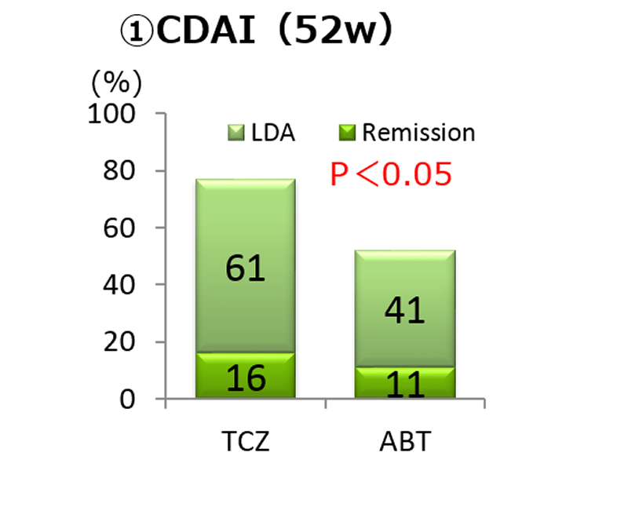
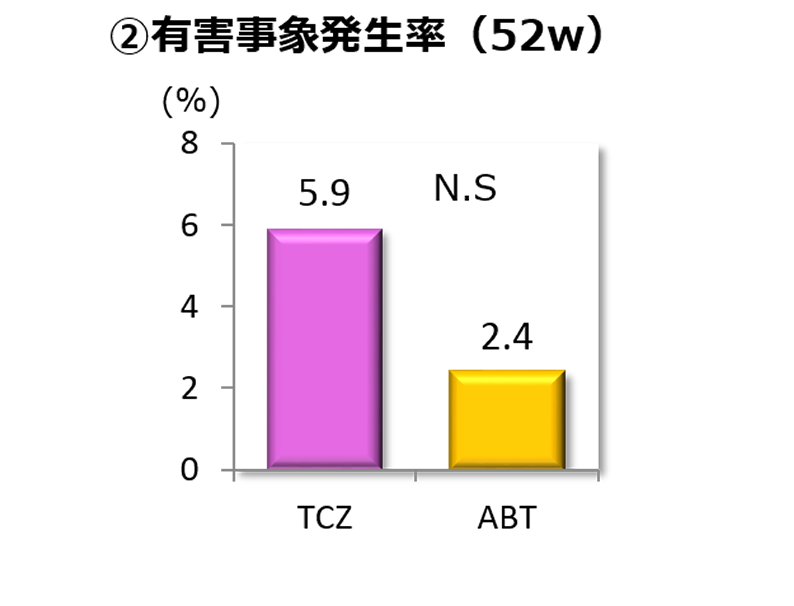
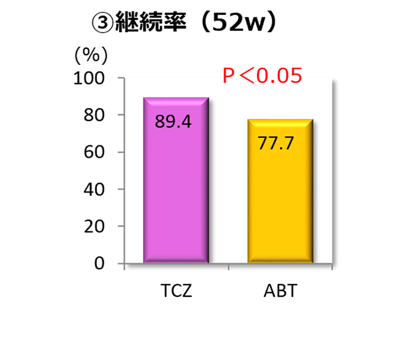

対オレンシア③有効性
TBCRのプロペンシティスコア（PS）マッチングではABTよりもTCZの有効性・継続率が高い
実地診療におけるTCZとABTのpropensity score（PS） matching法を用いた52週時臨床効果の比較
～多施設研究 TBCRより～
Tsurumai Biologics Communication Registry
TCZ 群217例とABT群164を、PSスコアで調整※後、両剤の有効性・安全性を比較した
※Baselineの年齢・罹病期間・Bio使用歴・MTX使用歴・DAS28-ESR・Stage・Class・MMP-3値
【調整後の患者背景】
| TCZ （n=85） |
ABT (n=85) |
|
|---|---|---|
| 年齢（歳） | 61.9±11.0 | 61.8±11.1 |
| 罹病期間（年） | 12.1±14.0 | 11.3±11.6 |
| 前Bio歴（%） | 47 | 55 |
| MTX併用（%） | 59 | 53 |
| CDAI | 23.2±9.7 | 24.4±13.8 |



産業医科大学ではTCZとABTが同等の有効性と報告されたが、同じくPSを使用したTBCR報告ではTCZが有効性・継続率ともに優れ、有害事象の発生率は変わらないという報告がある